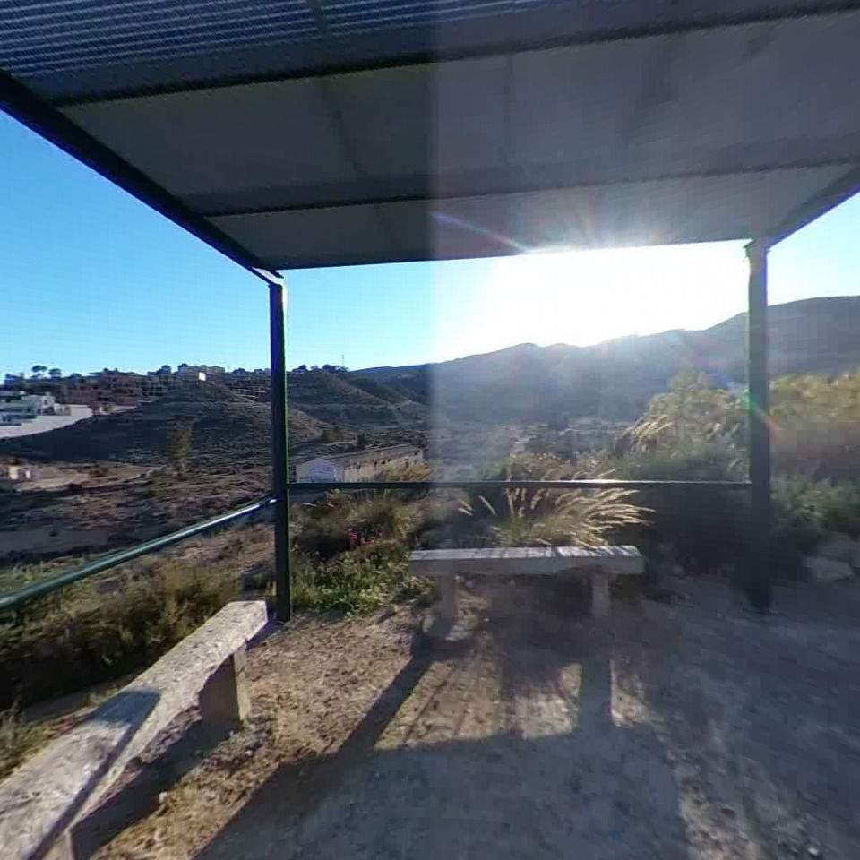
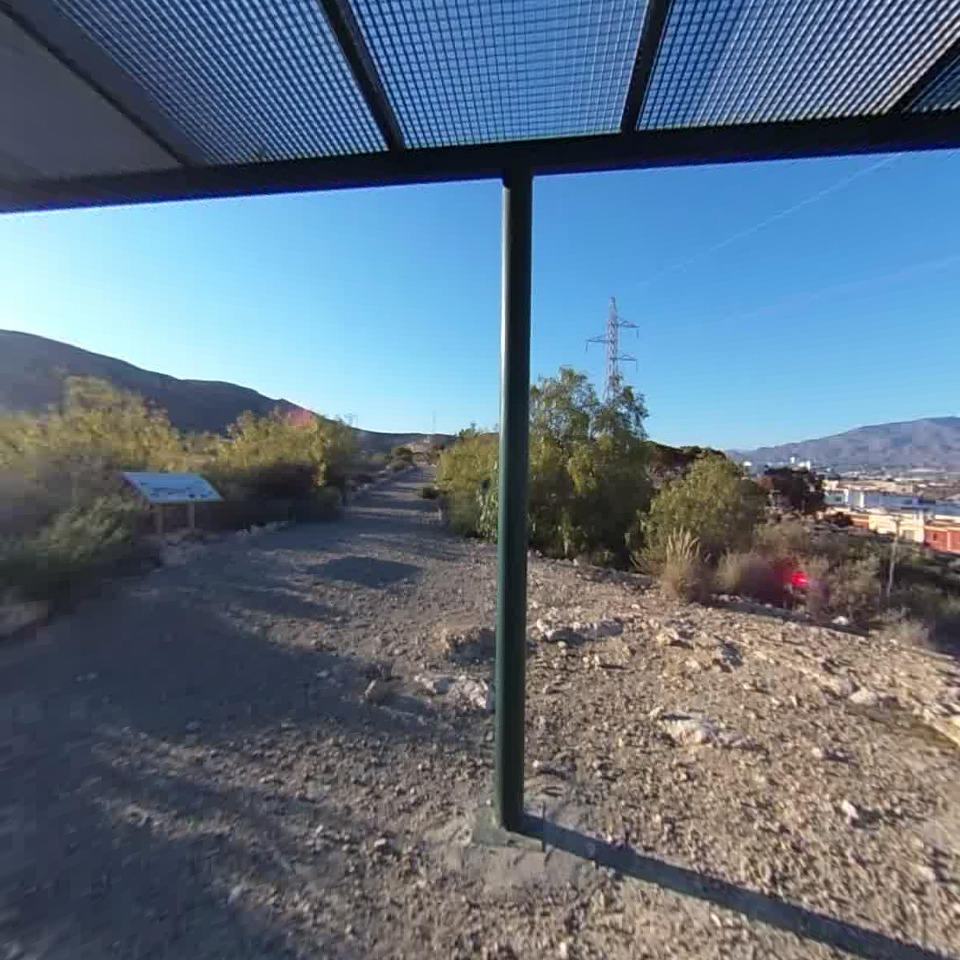
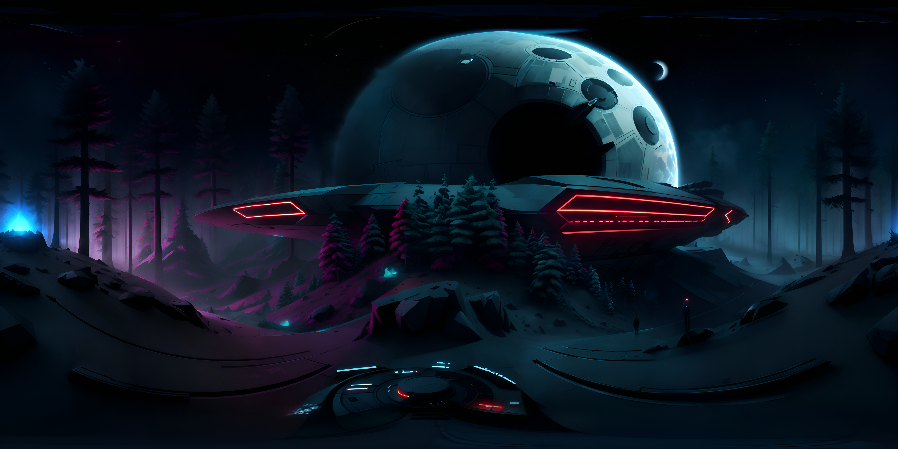

<!DOCTYPE html>
<script src="https://cdn.jsdelivr.net/gh/aframevr/aframe@3f0df33946cf12e3d552b3b4e500dd5b8ff6f692/dist/aframe-master.min.js"></script>
<!-- <script src="./aframe142.min.js"></script> -->
<script src="aframe-ar.js"></script>
<!-- <script src="aframe-extra.min.js"></script> -->
<script type="module" src="holo-material.js"></script>
<script type="module" src="color-shift.js"></script>
<!-- <script type="module" src="cube-env-map.js"></script> -->
<!-- <script src="post-processing.min.js"></script> -->
<!-- <script src="aframe-effects.js"></script> -->

<body style='margin : 0px; overflow: hidden; font-family: Monospace;'>
	<div style='position: fixed; top: 10px; width:100%; text-align: center; z-index: 1;'>
		<!-- <a href="https://github.com/AR-js-org/AR.js/" target="_blank">AR.js</a> - example for a-frame -->
		<br />
		<!-- Contact me any time at <a href='https://twitter.com/nicolocarp' target='_blank'>@nicolocarp</a> -->
	</div>


	<a-scene id='scene' embedded arjs='sourceType: webcam; detectionMode: mono_and_matrix; matrixCodeType: 3x3;' renderer='precision: high;' color-shift>


		<a-assets>
			<a-asset-item id="astronaut" src="models/astronaut.glb"></a-asset-item>
			<a-asset-item id="dragon" src="models/dragon.glb"></a-asset-item>
			<a-asset-item id="hubble" src="models/hubble.glb"></a-asset-item>
			<a-asset-item id="iss" src="models/iss.glb"></a-asset-item>
			<a-asset-item id="starliner" src="models/starliner.glb"></a-asset-item>
			<!-- <a-cubemap id="reflection"> -->
			<!--  -->
			<!--  -->
			<!--  -->
			<!--  -->
			<!--  -->
			<!--  -->
			<!-- </a-cubemap> -->
			<!--  -->
		</a-assets>


		<!-- <a-sky src="#sky"></a-sky> -->

		<a-entity light="type: ambient; color: #BBB"></a-entity>
		<a-entity light="type: directional; color: #FFF; intensity: 0.6" position="-0.5 1 1"></a-entity>


		<!-- <a-entity  position='0 0 -2' rotation="-90 0 0">
			<a-entity scale="0.008 0.008 0.008" position='0 0 0' gltf-model="#astronaut" animation="property: rotation; to: 0 360 0; loop: true; dur: 5000; easing: linear;" holo-material></a-entity>
		</a-entity> -->
		
		<!-- <a-entity scale="0.008 0.008 0.008" position='0 0 -2' gltf-model="#astronaut" animation="property: rotation; to: 0 220 -45; loop: true; dur: 5000; easing: easeInOutSine; dir: alternate" holo-material ></a-entity> -->
		<!-- <a-entity scale="0.1 0.1 0.1" position='0 0 -2' gltf-model="#dragon" animation="property: rotation; to: 0 220 -45; loop: true; dur: 5000; easing: easeInOutSine; dir: alternate" holo-material></a-entity> -->
		<!-- <a-entity scale="0.05 0.05 0.05" position='0 0 -2' gltf-model="#hubble" animation="property: rotation; to: 20 220 -45; loop: true; dur: 5000; easing: easeInOutSine; dir: alternate" holo-material></a-entity> -->
		<!-- <a-entity scale="0.02 0.02 0.02" position='0 0 -2' gltf-model="#iss" animation="property: rotation; to: 0 220 -45; loop: true; dur: 5000; easing: easeInOutSine; dir: alternate" holo-material></a-entity> -->
		<!-- <a-entity scale="0.3 0.3 0.3" position='0 0 -2' gltf-model="#starliner" animation="property: rotation; to: 0 220 -45; loop: true; dur: 5000; easing: easeInOutSine; dir: alternate" holo-material>	</a-entity> -->
		
		
		<a-marker type='pattern' url='markers/pattern-astronaut.patt' smooth='false'>
			<a-entity position='0 0.8 0' rotation="-90 0 0">
				<a-entity scale="0.08 0.08 0.08" position='0 0 0' gltf-model="#astronaut" animation="property: rotation; to: 0 360 0; loop: true; dur: 5000; easing: linear;" holo-material></a-entity>
			</a-entity>
		</a-marker>
		
		<a-marker type='pattern' url='markers/pattern-starliner.patt' smooth='false'>
			<a-entity position='0 0.8 0'  rotation="-125 0 0">
				<a-entity scale="3 3 3" position='0 0 0' gltf-model="#starliner" animation="property: rotation; to: 0 220 -45; loop: true; dur: 5000; easing: easeInOutSine; dir: alternate" holo-material> </a-entity>
			</a-entity>
		</a-marker>
		
		<a-marker type='pattern' url='markers/pattern-dragon.patt' smooth='false'>
			<a-entity position='0 0.8 0' rotation="-90 0 0">
				<a-entity scale="1 1 1" position='0 0 0' gltf-model="#dragon" animation="property: rotation; to: 0 360 0; loop: true; dur: 5000; easing: linear" holo-material></a-entity>
			</a-entity>
		</a-marker>
		
		<a-marker type='pattern' url='markers/pattern-hubble.patt' smooth='false'>
			<a-entity position='0 0.6 0' rotation="-125 0 0">
				<a-entity scale="0.5 0.5 0.5" position='0 0 0' gltf-model="#hubble" animation="property: rotation; to: 0 359 0; loop: true; dur: 5000; easing: linear" holo-material></a-entity>
			</a-entity>
		</a-marker>
		
		<a-marker type='pattern' url='markers/pattern-iss.patt' smooth='false'>
			<a-entity position='0 0.6 0' rotation="-125 0 0">
				<a-entity scale="0.2 0.2 0.2" position='0 0 0' gltf-model="#iss" animation="property: rotation; to: 0 360 0; loop: true; dur: 5000; easing: linear" holo-material></a-entity>
			</a-entity>
		</a-marker>
		
		<a-marker type='pattern' url='markers/pattern-starliner.patt' smooth='false'>
			<a-entity position='0 0.8 0' rotation="-100 0 0">
				<a-entity scale="3 3 3" position='0 0 0' gltf-model="#starliner" animation="property: rotation; to: 0 360 0; loop: true; dur: 5000; easing: linear" holo-material>	</a-entity>
			</a-entity>
		</a-marker>


		<a-entity camera></a-entity>


	</a-scene>

</body>

</html>